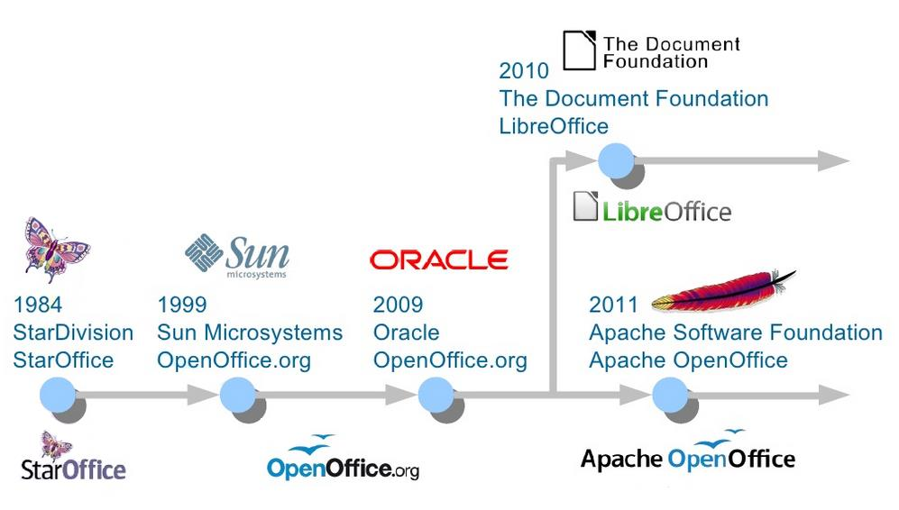
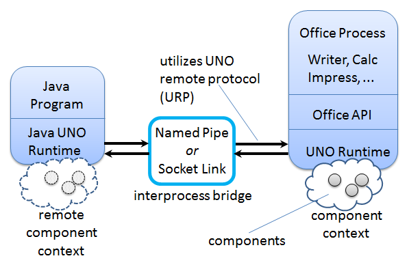
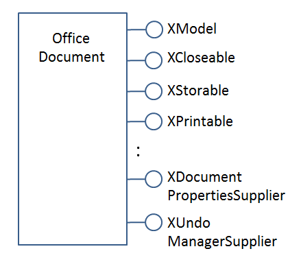
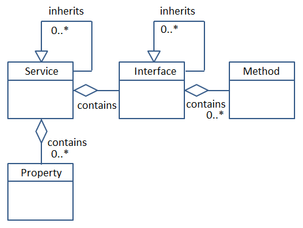
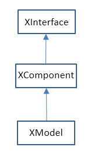
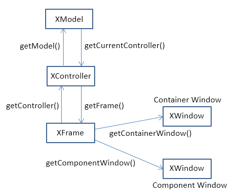

Chapter 1. LibreOffice API Concepts¶
Topics
Some History; Help and Examples for the LibreOffice SDK (lodoc, loguide); Office as a Process; Common Structures (Interface, Property, Service, and Component); Service and Interface Inheritance Hierarchies; the Frame- Controller-Model (FCM) Relationship; Extensions; Comparison with Basic
Example folder: "Utils"
This chapter describes LibreOffice API concepts without resorting to code (that comes along in the next chapter). These concepts include Office as a (possibly networked) process, the interface, property, service, and component structures, the two API inheritance hierarchies, and the Frame-Controller-Model (FCM) relationship.
LibreOffice is an open source, cross-platform, office suite, made up of six main applications, and lots of other useful stuff. The applications are: Writer (a word processor), Draw (vector graphics drawing), Impress (for slide presentations), Calc (spreadsheets), Base (a database front- end), and Math (for writing formulae). Some of the lesser- known features include a charting library, spell checker, forms designer, thesaurus, e- mail package, and support for extensions (e.g. new menu items and libraries). Aside from Open Document Format (ODF) files, LibreOffice can import, convert, and export a vast number of text, graphic, and other formats, including Microsoft Office documents, PDF, HTML, SWF (Flash), and SQL databases.
LibreOffice is managed and developed by The Document Foundation (https://libreoffice.org), and was first released in 2010. However, earlier Office versions date back to the 1980's, and traces of this heritage are visible in many parts of its API. Figure 1 shows a simplified timeline of how StarOffice begat OpenOffice, and so on to LibreOffice.

Figure 1. Office's Timeline.
This book is not about how to use LibreOffice's GUI (e.g. where to find the menu item for italicizing text). I'm also not going to discuss how to compile the LibreOffice source, which is a focus of LibreOffice's development webpage (https://wiki.documentfoundation.org/Development). My intention is to explain the Java API that comes as part of the LibreOffice SDK, which you can obtain from https://libreoffice.org/download/libreoffice-still.
If you're unsure how to install the SDK then please refer to the website accompanying this book (https://fivedots.coe.psu.ac.th/~ad/jlop/). The "Installing the code for Java LibreOffice Programming" page at https://fivedots.coe.psu.ac.th/~ad/jlop/install.html gives step-by-step instructions, and also explains how to download the book's utility classes and examples.
1. Sources for API Information¶
Rather amazingly, today's API in LibreOffice is almost 100% compatible with OpenOffice, which means that code developed 10-15 years ago (i.e. during the Sun and Oracle stewardships of Office) still works with no (or very minor) changes.
It also means that a programmer can choose to read the LibreOffice Java API documentation or the older OpenOffice material since, apart from formatting differences, they're virtually the same. However, my preference is for the LibreOffice pages because of the clickable inheritance diagrams, as I'll explain later.
Indeed, the examples at the LibreOffice API website (https://api.libreoffice.org) link to the OpenOffice Developer's Guide at https://wiki.openoffice.org/wiki/Documentation/DevGuide/OpenOffice.org_Developers_Guide. Sadly, that rather old manual (for OpenOffice v3.1 released in 2009) is the only long description of the Java Office API, and is overly technical in places. It can be downloaded as a single PDF file from https://wiki.openoffice.org/w/images/d/d9/DevelopersGuide_OOo3.1.0.pdf. The PDF version has two drawbacks – its sections and sub-sections are unnumbered, making the overall structure of each chapter somewhat confusing. Another problem is that many of the code examples are missing newline characters, so are hard to read.
This book is my attempt to write a more gradual, modern introduction to the API.
I'm going to refer to the LibreOffice and OpenOffice APIs collectively as the Office API due to their similarities. I believe that everything I say about LibreOffice Java programming applies to OpenOffice. But, to be honest, I've only tested my examples in LibreOffice on Windows 7. If you do find any inconsistencies, then please contact me at ad@fivedots.coe.psu.ac.th with details.
I hope this book will make the more esoteric materials in the developer's guide easier to understand. One of the ways I'll be flattening the learning curve is by hiding parts of the API behind my own collection of utility classes. This is far from being a novel idea, as it seems that every programmer who has ever written more than a few pages of Office code ends up developing support functions. I've gratefully borrowed very liberally from those intrepid programmers, but I take full responsibility for my coding choices.
There's a lot of Java Office API examples and code snippets online (as you might
expect after 15+ years of existence). Your first stop should be the two groups of
examples at https://api.libreoffice.org/examples/examples.html (in the Java and
Developer's Guide subdirectories). They can also be found in the Office download in
You should also browse the LibreOffice development forums (https://imaccanici.org/en.libreofficeforum.org) and the corresponding ones for OpenOffice (https://forum.openoffice.org/en/forum). Look for the sub-forums that talk about the UNO API and/or macros. Sadly, imaccanici.org is an archive of the defunct https://en.libreofficeforum.org/ site, but the OpenOffice forum is still going strong, and very relevant. LibreOffice has a question-posing page, at https://ask.libreoffice.org/en/questions, which is a good source of information.
https://oooforum.org/ is an older forum site, which has the unfortunate habit of periodically disappearing from the Web. Often the only way to access one of its posts or threads is via cached pages maintained by Google.
The Office API has been ported to many programming languages. The API was first coded in C++, and later converted to Java, Basic, Python, C#, Perl, JavaScript, OORexx, and many more. The most popular language is probably Basic, which is principally used for writing macros (also called scripts) embedded in Office documents, or in the Office application. A big advantage of Basic is its lack of typing, which simplifies its version of the API. Basic macros utilize a similar set of Office API functions as Java, so can be a useful source of ideas.
Perhaps the best place for learning about Office macro programming is Andrew Pitonyak's website (https://pitonyak.org/), which includes an excellent free-to- download book: "OpenOffice.org Macros Explained", a macros cookbook, and a document focusing on database macros.
Another great site is https://openoffice3.web.fc2.com/, which is mostly written in Japanese. This shouldn't put off non-Japanese readers since Google is quite happy to translate the pages for you, and the code examples are mostly ASCII.
Finding API Documentation Online¶
The online API documentation can be time-consuming to search due to its great size.
If you want to have a browse, start at https://api.libreoffice.org/docs/idl/ref/namespaces.html, which takes a while to load.
Each Office application (e.g. Writer, Draw, Impress, Calc, Base, Math) is supported by multiple modules (similar to Java packages). For example, most of Writer's API is in Office's "text" module, while Impress' functionality comes from the "presentation" and "drawing" modules. These modules are located in com.sun.star package, which is documented at https://api.libreoffice.org/docs/idl/ref/namespacecom_1_1sun_1_1star.html.
Rather than searching manually through a module for a given class, it's a lot quicker to get a search engine to do it for you. This is the purpose of my lodoc.bat batch file, which utilizes DuckDuckGo (https://duckduckgo.com/). For instance, at the command line, you can type:
lodoc xtext
and the Office API documentation on the XText interface will open in your browser.
lodoc.bat is 'almost' always returns the right page, mainly because Office interfaces, and many of its services, have long unique names. (I'll explain what a service is shortly.) loDoc.bat can be found in the Utils/ folder listed at the start of this chapter, and its also included in every example folder used in later chapters.
Service names are less unusual, and so you should probably add the word "service" to your search. For instance, if you're looking for the Text service, type:
lodoc text service
Module names are also quite common words, so add "module" to the search. If you want to reach the "text" module (which implements most of Writer), search for:
lodoc text module
You can call lodoc with Office application names, which are mapped to API module names. For instance:
lodoc Impress
brings up the "presentation" module page.
You may be wondering why I chose to implement this script using DuckDuckGo rather than Google? Google doesn't seem to like me querying it from the command line. It periodically keeps asking me to type in a captcha string when I call it from lodoc.bat. Another problem is that Google likes to replace my search strings with 'more likely' strings.
Searching the Online Developer's Guide¶
The online Developer's Guide can also be time-consuming to search because it's both long (around 1650 pages), and poorly organized. To help, I've written a small batch file called loGuide.bat which is quite similar to loDoc.bat. It calls DuckDuckGo, limiting the search to the Developer's Guide web pages, and loads the first matching page into your web browser.
For example:
loguide "Lifetime of UNO Objects"
loads the guide page with that heading into the browser. A less precise query will probably produce the same page, but even when the result is 'wrong' it'll still be somewhere in the guide.
loGuide.bat can be found in the Utils/ folder mentioned at the start of this chapter, and is also included in every example folder used in later chapters.
The first argument of loGuide.bat can be an Office application name, which restricts the search to the part of the guide focusing on that application's API. For instance:
loguide Calc "Data Validation"
and
loguide impress "Page Formatting"
search the Calc and Impress parts of the guide.
Calling loGuide.bat with just an application name, opens the guide at the start of the chapter on that topic. For example:
loguide writer
opens the guide at the start of the "Text Documents" chapter.
Calling loGuide.bat with no arguments, makes the browser load the first page of the guide.
2. Office as a Process¶
Office is started as an OS process, and a Java program communicates with it via a socket or named pipe. This necessarily complicates the Java/Office link, which is illustrated in Figure 2.

Figure 2. A Java Program Using Office.
The invocation of Office and the setup of a named pipe link can be achieved with a single call to the SDK's Bootstrap.bootstrap() method. Its source code is available online, and makes for interesting reading. (Probably the most reliable way of finding it is to google using the terms `Bootstrap libreoffice filetype:java.)
bootstrap() starts the Office executable (called soffice.exe) with several command line arguments, the most important being "-accept" which specifies the use of pipes or sockets for the interprocess link.
A call to XUnoUrlResolver.resolve() inside bootstrap() creates a remote component context, which acts as proxy for the 'real' component context over in the Office process (see Figure 2). The context is a container/environment for components and UNO objects which I'll explain below. When a Java program refers to components and UNO objects in the remote component context, the interprocess bridge maps those references across the process boundaries to the corresponding components and objects on the Office side.
Underpinning this mapping is the Universal Network Object (UNO) model which links objects in different environments using the UNO remote protocol (URP). For example, a method call is converted into a byte stream, sent across the bridge and reconstructed. Method results are returned in the same way.
Thankfully, this network communication is hidden by the Office API. The only place a beginner might encounter UNO mechanisms is when loading or saving documents.
Every document (more generally called a resource) is referred to using a Uniform Resource Identifier (URI); URIs are employed by Office’s Universal Content Broker (UCB) and Universal Content Providers (UCPs) to load and save a wide range of data formats.
Bootstrap.bootstrap() sets up a remote component context based on named pipes, but if you want to utilize sockets, then the coding is left to you. My Lo utility class contains a socketContext() method that does the necessary work, and I'll show some examples of its use in the next chapter.
Obtaining a remote component context is not the end of Office’s initialization.
Typically, at least three UNO objects are needed over on the Java side for most programming tasks: a service manager, a Desktop object, and a component loader.
The service manager is used to load additional services into Office at runtime. The Desktop object has nothing to do with the OS'es desktop – it refers to the top-level of the Office application, particularly to its GUI. The component loader is used to load or create Office documents.
Other UNO objects might be more useful depending on your programming task. For example, for historical reasons, Office supports two slightly different service managers (one that requires an explicit component context argument, and an older one that doesn't). I've chosen to add both of them to the component context, as a convenience to the programmer; this detail is hidden by my Lo util class.
3. API Data Structures: interface, property, service, and component¶
There are four main data structures used by the API: interface, property, service, and component.
The use of the word 'interface' is obviously influenced by its meaning in Java, but it's probably best to keep it separate in your mind. An Office interface is a collection of method prototypes (i.e. method names, input arguments, and return types) without any implementation or associated data. A property is a name-value pair, used to store data.
A service comprises a set of interfaces and properties needed to support an Office feature.
Figure 3 illustrates how interface, property, and service are related.

Figure 3. Services, Interfaces, Properties.
The Office documentation often talks about property structs (e.g. the Point and KeyEvent structs). These are coded in Java as classes, and their names often clash with classes in the standard JDK which can complicate their usage.
Since interfaces contain no code, a service is a specification for an Office feature.
When a service is implemented (i.e. its interfaces are implemented), it becomes a component. This distinction means that the Office API can be implemented in different languages (as components) but always employs the same specifications (services), as represented in Figure 4.

Figure 4. Components and Services.
The developer's guide uses a notation like that shown in Figure 5 to draw a service and its interfaces.

Figure 5. The OfficeDocument service.
I haven't drawn all the interfaces for OfficeDocument, since they're quite numerous, and I haven’t listed the methods defined by each interface.
The developer's guide drawing for the SpellChecker service is shown in Figure 6.

Figure 6. The SpellChecker service.
The two figures illustrate a useful naming convention: all interface names start with the letter "X".
The developer's guide notation leaves out information about the properties managed by the services. Also, the services webpages at the LibreOffice site don't use the guide’s notation.
The URLs for these pages are somewhat difficult to remember. The best thing is to use my loDoc.bat tool to find them. For instance, you can access the office document and spell checker services with:
lodoc officedocument service
and
lodoc spellchecker service
Note that the "officedocument" search result isn't ideal – it takes you to the IDL page for the service. You need to click on the "OfficeDocument" link under the "Classes" heading to get to the actual service details.
The LibreOffice service webpages usually list properties, but sometimes refer to them as 'attributes'. If the service documentation doesn't describe the properties, then they're probably being managed by a separate “Supplier” interface (e.g. XDocumentPropertiesSupplier for OfficeDocument in Figure 5). The supplier will include methods for accessing the properties as an XPropertySet object.
One great feature of the LibreOffice webpages is the inheritance diagrams on each service and interface page. Part of the diagram for the OfficeDocument service is shown in Figure 7.

Figure 7. Part of the Inheritance Diagram for the OfficeDocument Service.
Each box in the diagram can be clicked upon to jump to the documentation for that subclass or superclass.
4. Two Inheritance Hierarchies for Services and interfaces¶
Services and interfaces both use inheritance, as shown by the UML diagram in Figure 8.

Figure 8. Service and Interface Relationships and Hierarchies.
For example, OfficeDocument is the superclass service of all other document formats, as illustrated in Figure 9.

Figure 9. OfficeDocument as a Superclass Service.
Part of this hierarchy can also be seen in Figure 7.
An interface can also be part of an inheritance hierarchy. For instance, the XModel interface inherits XComponent and XInterface, as in Figure 10.

Figure 10. The Superclasses of XModel.
The LibreOffice documentation graphically displays these hierarchies (e.g. see Figure 7), but makes no visual distinction between the service and interface hierarchies. It also represents the "contains" relationship between services and interfaces as inheritance, rather than as lines with circles as in the developer's guide (e.g. see Figures 5 and 6).
5. The FCM Relationship¶
The Frame-Controller-Model (FCM) relationship (or design pattern) is a part of Office which programmers will encounter frequently. It appears in the API as connections between the XFrame, XController, and XModel interfaces, as shown in Figure 11.

Figure 11. The FCM Relationship.
Every Office document inherits the OfficeDocument service (see Figure 9), and Figure 5 shows that OfficeDocument supports the XModel interface. This means that every document will include XModel methods for accessing the document's resources, such as its URL, file name, type, and meta information. Via XModel.getCurrentController(), a document's controller can be accessed.
A controller manages the visual presentation of a document. For instance, the Office GUI interacts with the controller to position the cursor in a document, to control which page is displayed, and to highlight selections. The XController interface belongs to the Controller service, which is a superclass for viewing documents; subclasses include TextDocumentView, DrawingDocumentDrawView, and PresentationView.
From XController, it's possible to reach XFrame, which contains information about the document's display window. A document utilizes two XWindow objects, called the component and container windows. The component window represents the rectangular area on screen that displays the document. It also handles GUI events, such as window activation or minimization. The container window is the component's parent. For example, a component window displaying a chart might be contained within a spreadsheet window A frame can contain child frames, allowing the Office GUI to be thought of as a tree of frames. The root frame of this tree is the Desktop object, which you may recall is one of the first three objects stored in the remote component context when we start Office. This means that we can move around the frames in the Office GUI starting from the loaded document, or from the root frame referred to from XDesktop. For example, XDesktop provides getCurrentFrame() to access the currently active frame.
6. Components Again¶
A knowledge of the FCM relationship, and its XFrame, XController, and XModel interfaces, lets me give a more detailed definition of a component. Back in section 3 (and in Figure 4), I said a component was an implemented service. Another way of understanding a component is in terms of how much of the FCM relationship it supports, which allows the 'component' idea to be divided into three:
- A component that supports both the XModel and XController interfaces is usually an Office document.
- A component with a controller but no model is typically used to implement library functionality that doesn't need to load data. Examples include the spell checker, and Office tools for creating database forms.
- A component with no model or controller (i.e. just an XWindow object) is used for simple GUI elements, such as Office's help windows.
Of these three types, the component-as-document (number 1) is the most important for our needs. In particular, I'll be using the component loader in the remote component context to load Office documents.
7. What's an Extension?¶
The Office developer's guide often uses the words 'extension', 'add-on', and 'add-in'. I'll be spending four chapters on these features in Part 8 (along with macro programming in Java), but it's worth briefly explaining them now.
An extension is a code library that extends Office's functionality. For Java programmers, an extension usually takes the form of a JAR file containing a service, its interfaces, properties, and their implementations. Since an extension implements the service, it may also be referred to as a component.
An add-on is an extension with additional XML files defining a GUI for the extension (e.g. a menu bar, menu item, or toolbar icon). An add-on is rendered in Office's GUI in the same way as standard Office elements.
An add-in or, to use its full name, a Calc Add-in, is an extension that adds a new function to Calc.
8. A Comparison with the Basic API¶
If you start searching the forums, newsgroups, blogs, and web sites for Office examples, it soon becomes clear that Java is not the language of choice for most Office programmers. Basic (sometimes called StarBasic, OpenOffice.org Basic, LibreOffice Basic, or even Visual Basic or VB by mistake) is the darling of the coding crowd.
This is understandable since Office (both LibreOffice and OpenOffice) includes an IDE for editing and debugging Basic macros. Also, there's a lot of good resources on how to utilize these tools (e.g. start browsing the LibreOffice wiki page "LibreOffice Basic Help", https://help.libreoffice.org/Basic/Basic_Help). The few books that have been written about programming the Office API have all used Basic (e.g. Pitonyak's "OpenOffice.org Macros Explained" at https://pitonyak.org/book/).
There are two styles of Basic macro programming – scripts can be attached to specific documents, or to the Office application. In a document, a macro can respond to Office events, such as the loading of the document, or its modification. The macro can monitor the user's key presses or menu button presses, and can utilize Office dialogs.
This isn't the place for a language war between Java and Basic, but it's fair to say that the Basic Office API is simpler than the Java version! This is partly due to the fact that Basic has a weaker typing system than Java, but also that the Office abstractions used by Basic are simpler than those in Java.
The main difference is that the Basic API doesn't use interfaces. Instead of a service containing a collection of interfaces, each of which has methods, a Basic service directly contains all the methods. This means that an Office service can be understood as a plain-old object containing methods and data (in the form of properties).
I'm at a loss why this abstraction wasn't used in Java. One use of interfaces is to employ interface typing, but most of the typing protection is applied at runtime when one interface is cast to another. This means that one of the big benefits of typing (compile-time error detection) is lost.
Another advantage of Basic is its hiding of the complexities of accessing Office at start-up, and for requesting services. In comparison, for many years, there was no Bootstrap class in the Java Office API. This meant that every Java programmer had to grapple with difficult code for linking to Office and obtaining a remote component context.
In the Basic API, there's no remote component context since the macros run inside Office or inside a document that is loaded into Office. Incidentally, this means that Basic code doesn't need those few extra microseconds for every operation to communicate across process boundaries.
The Basic programmer still utilizes a service manager, Desktop object, and perhaps a loader. This means that the first few lines of a macro might be:
Dim oSM, oDesk, oDoc As Object
Set oSM = CreateObject("com.sun.star.ServiceManager")
Set oDesk = oSM.createInstance("com.sun.star.frame.Desktop")
Set oDoc = oDesk.loadComponentFromURL(
"file:///C:/tmp/testdoc.odt", "_blank", 0, noArgs())
However, if the script is part of a loaded document, then the call to loadComponentFromURL() isn't needed, reducing the code to:
Set oSM = CreateObject("com.sun.star.ServiceManager")
Set oDesk = oSM.createInstance("com.sun.star.frame.Desktop")
Set oDoc = oDesk.CurrentComponent
Also, Office's Basic runtime environment automatically creates a service manager and Desktop object, so it's unnecessary to create them explicitly. This reduces the code to a one-liner:
Set oDoc = StarDesktop.CurrentComponent
or even:
Set oDoc = ThisComponent
If other services are needed, Basic programmers call the createUnoService() function which transparently requests the named service from the service manager. For instance:
set sfAcc = CreateUnoService("com.sun.star.ucb.SimpleFileAccess")
sfAcc.CreateFolder(dirName)
Recall that a Basic service contains all the methods from its interfaces, so once the service reference has been obtained, methods can be called directly.
One of the aims of my utilities is to hide as much of the complexity of Office as the Basic version of the API.
Having just reread this section, I may have just convinced myself to become a Basic programmer . The reason I'm going to stick with Java is that it's a full-featured language, with massive numbers of standard and third-part APIs which can augment the Office API.